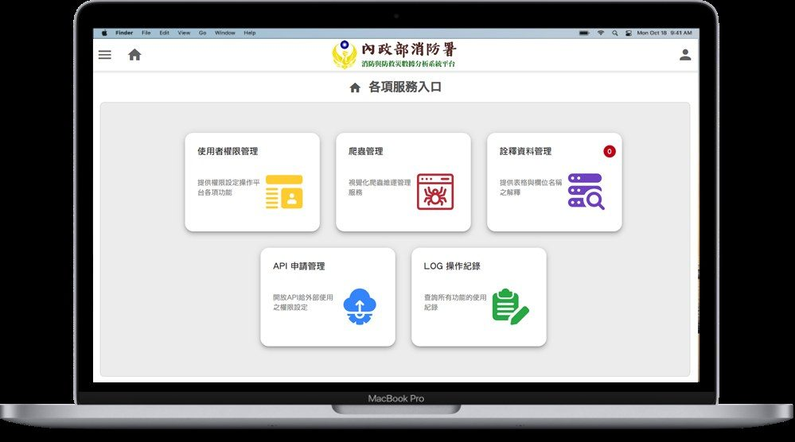
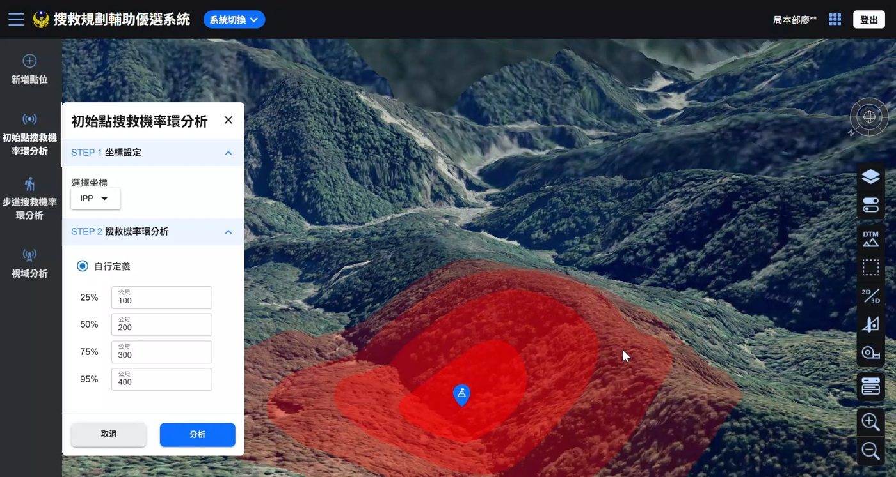
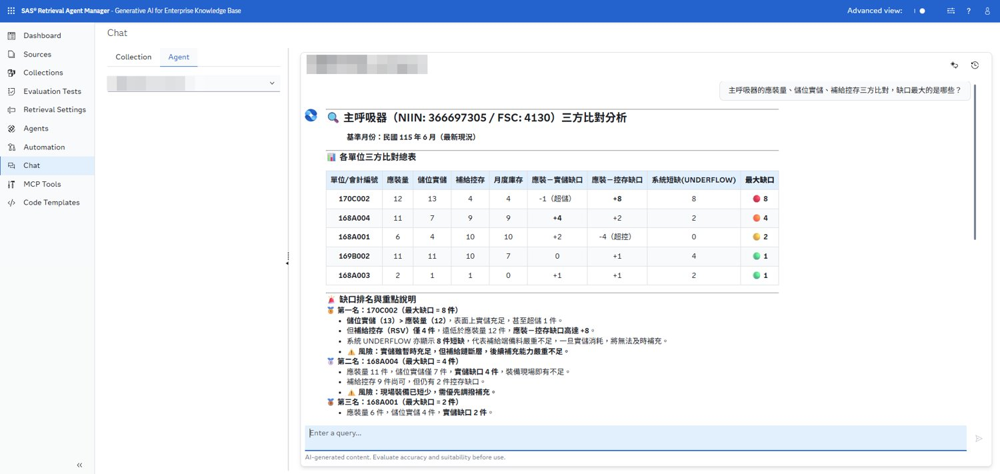

平台服務入口
具備 PMP 認證與 6 年跨 AI、大數據、GIS 的專案管理經驗。 擅長橋接業務與技術團隊，從需求訪談到系統落地的全生命週期管理， 為組織創造數據驅動的決策價值。
從地理資訊出身，走進大數據與 AI 的世界——好的專案管理，是讓對的技術在對的場景發揮價值。
我是林子鈞，現任資拓宏宇國際 專案管理師，工作範疇橫跨 PM、SA、DA。 曾主責消防大數據平台，整合 20+ 跨機關資料集並促成 5 億元後續預算編列； 也曾以 Python/VBA 自動化工具為公司節省 80% 人力成本。
近年持續將生成式 AI 與 Agent 工具導入專案工作流——從 RAG、Text-to-SQL 到 Prompt Engineering，用於資料治理、簡報與系統雛形產製，讓交付速度與品質同步提升。
PMP 認證，10+ AI 與大數據專案，混合式（敏捷＋瀑布）管理
RAG、Text-to-SQL、Agent 工作流、知識庫建置、時間序列模型
Python、SQL、Tableau、Power BI，從資料清理到視覺化敘事
WebGIS／3D GIS 導入，空間分析設計，Geo AI 與發明專利
每一個百分比背後，都是流程再造與技術導入的實際效益。
三個代表作，涵蓋大數據平台、3D GIS 與生成式 AI 落地。點縮圖切換、點大圖放大檢視。
主責消防署數據倉儲專案，整合 119 派遣、EMIC、火災預防等 20+ 跨機關資料集， 建置 AI 視覺化平台。導入 Transformer（SimVP、PatchTST）與 LLM，落地災情風險預測與 救災自動化文稿產製，以未送醫救護、救護反應效率等實務議題支撐循證決策。

以開源 GIS 技術於評選中勝出（vs. ArcGIS 等商用方案），建置山域搜救 3D 決策圖台： IPP 搜救機率環、視域分析、紅色地圖地形判釋、無人機影像 3D 建模。 混合式專案管理快速交付 MVP，並向全臺山搜人員舉辦教育訓練與實戰演練。

運用 SAS Retrieval Agent Manager（RAM）平台，結合 RAG 與 Text-to-SQL 建置專家型 AI Agent：決策者以自然語言提問，Agent 即時查詢庫存結構化資料、 比對應裝／實儲／控存缺口並產出決策建議。同步以 AI＋Figma 快速產製系統雛形與模擬資料。

5–6 年，從 GIS 分析走向 AI 專案管理。
專業能力的第三方背書。
PMI 國際專案管理學會
ETS 多益測驗
聽說讀寫精通
地理空間資料處理系統及方法
發明第 925616 號
深度學習預測臺北捷運運量
臺大地理碩士論文